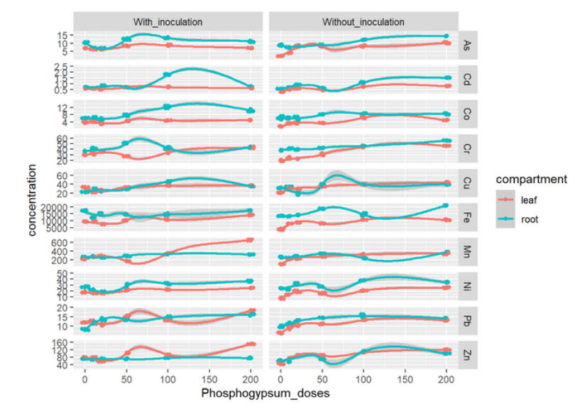

Tidyverse, Rmarkdown, Shiny
Ici exemples de ce que je sais faire visuellement
graphiques:
images graphiques
tableaux de synthèse
image tableaux de synthèses
analyses stats
image tableau stats? rapports